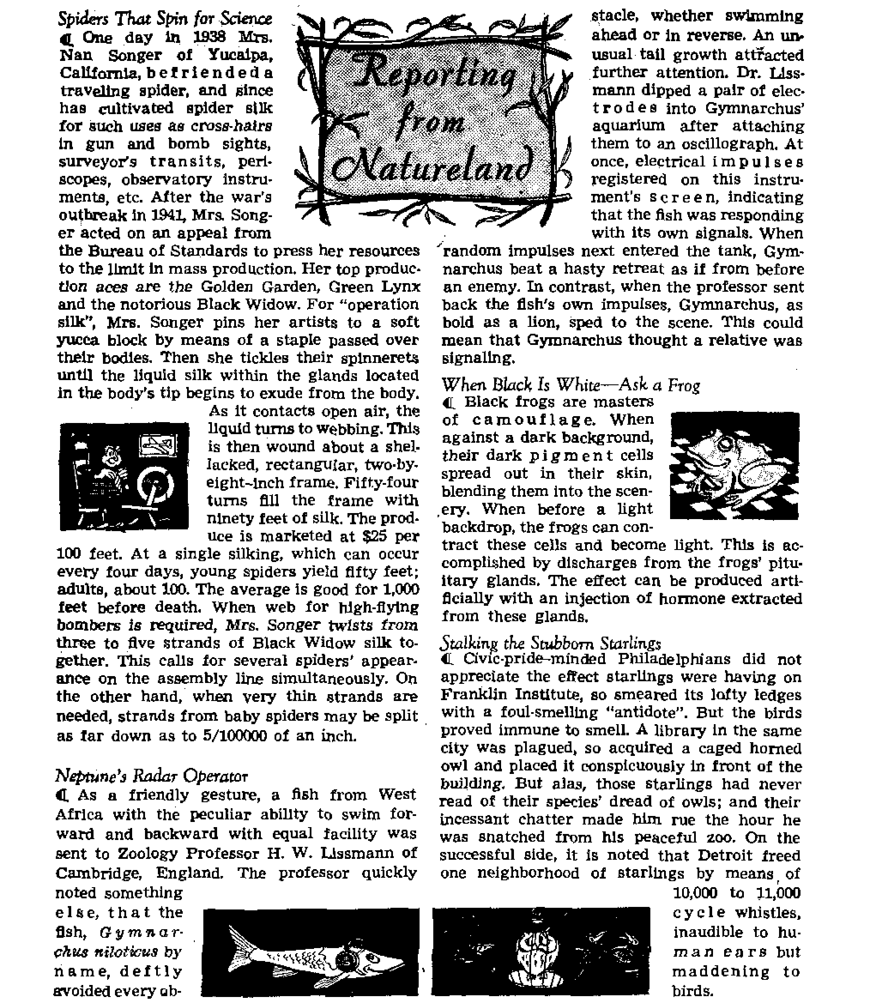

SLAVERY’S OFFSPRING -RACIAL SEGREGATION Will discrimination ever end? The honest answer
Draft Officials Have Trouble in Court Federal judges protect rights of ministers and conscientious objectors
----.... -----------—--------
A headache for housewives throughout the ages
THE MISSION OF THIS JOURNAL
News sources that are able to keep you awake io the vital lasuea of our timed must be unfettered by cenaorshlp and selfish Interests. “Awake[** has no fetters. It recognizes facts, faces facts, W fret to publish facts. It is not bound by political ambitions or obligations; it is unhampered by advertisers whose toes must not be trodden on; it is unprejudiced tiy traditional creeds. This journal keeps itself free that it may speak freely to you. But it does not abuse its freedom. It maintains integrity to truth.
MAwake 1” uses the regular news channels, but is not dependent on them. Its own correspondents are on all continents, In scores of nations. From the four corners of the earth their uncensored, on-the-scenes reports come to you through these columns. This journal's viewpoint is not narrow, but is international. It is read in many nations, in many languages, by persons of all ages. Through its pages many fields of knowledge pass in review—government, commerce, religion, history, geography, science, social conditions, natural wonders—why, its coverage Is as broad as the earth and as high as the heavens.
"Awake I” pledges itself to righteous principles, to exposing hidden foes and subtle dangers, to championing freedom for all, to comforting mourners and strengthening those disheartened by the failures of a delinquent world, reflecting sure hbpe for the establishment of a right-eousNew World.
Get acquainted with “Awake!” Keep awake by reading “Awake!’*
Published Semimonthly By WATCHTOWER BIBLE AND TRACT SOCIETY, INC, 117 Adams Street
N. H. Knobr, Prerirfent
Printing this issue; 075,000
Lansaun is wklrii ttli MagailM h HblhW: Sflnilfiwttily—'ATrUtAiM, Eballili, FlrmialL Q«nuc, Ncrwee&i, fipaolih, Mtminly—Dudsh, Fwarti, Greek, FortmUeM, ffrnditlt, Ukr»lniJin,
Office* Yearly ndmcrlptiflp R*te
*•*16*, U.S., 117 Adams St., Brooklyn 1, N.Y. |L Antral!*, LI Beresford fid , fHnthfliM N.EkW. Sa Canada. 40 Irwin Are., Toronto 5. Ontario *1 EUHm, 34 Omen Terrace, LcudCtt, W. 2 n SMtn AffiM, 023 Boston House, Cape Town Ta
Entered namd -dsia nailer at Brooklyn, N. T.
Brooklyn 1, N. Y., U- S. A. Gbast Suites, Secretary
Five cents a copy
Rimlttantn should be sect to office Id your country in compUtiice with regulation* to piiarentee etfe delW? of njouey, Bernfttanoes an accepted at Brooklyn from countries where no office la located, by international miner order only. fiubtwrjpiion rates in different mmtriea are hen rtated In local currency. Hntlw «f exilratlen {with renewal blank} j* sent at leut two Iuom before Kibscriptiou expires, Cbm* of *dtreat, whan sent U cur office aay expected ttttectlre within one month. 3e»d your old u well u new addrt*.
Act of March 3, 18J9. Prinierf In U. S. A,
Slavery's Offspring—Racial Segregation 5
Pointed Statements on Racial Prejudice 8
The Problem of Staying Clean—a Headache for Housewives Throughout the Ages 9
Situation in a U, S. Tax Office
Draft Officials Have Trouble in Court
Judge Scolds Stubborn Board
Full-Time Minister Exonerated
Curious Superstitions in the Middle East “Your Word Is Truth"
The Justice of Sin’s Penalty—Death 25
What About “Jonah and the Whale”? 27
Watching the World 29
V “Now it is high time to awake."—Romans 13:11 9j
Velum* XXXIII
Brooklyn, N, Y,t April 8, 1952
Number 7
GIVE AN INCH—THEY TAKE A MILE
The record of religion in education
MUST a democracy provide gov' eminent support for parochial schools to ensure equality in mmImK education? American tradition with its concept of separation of church and state has always answered in the negative. In the United States, where they have ever been a minority, Catholic authorities have professed to agree with this principle. But in recent years they have stepped up demands for limited aid, advancing the subtle argument that measures designed for child aid should apply equally to parochial student bodies.
In March, 1950, <rRev.” John E. Walsh, C.S.C., of the University of Notre Dame, explicitly limited such pleas for aid to such “subsidiary services” as health, transportation and lunch assistance. Then Cardinal Spellman denied that any aid for the schools themselves, like “construction maintenance or salaries of teachers”, was sought. He even said that to go that far would be “un-American”.
But wary opponents have continued saying “no” to the little demands, afraid that ever larger ones would follow. In the first place, is not any aid, whether for teachers, buildings or health benefits, for the children? Why is one form of assistance less of an infringement on the bounds of church and state than the other? In a series of articles by Paul Blanshard, the Nation magazine last year outlined the maimer in which the Catholic Church had wormed its way little by little into education throughout Western Europe. Lamenting the Catholic conspiracy against public education in his land since 1831, Belgium's aged ex-prime minister and minister of education, Camille Huysmans, said: “They did not act this way in the beginning. They were moderate then. A Catholic is a gentleman when he is in the minority.”
This magazine called attention to these matters in its issue of July 8, 1951. But when told, many choose to turn apathetically away or to dismiss the evidence as prejudice. But time and events do not stand still for such sleepy ones.
Consider an example. A United Press dispatch, dated September 14 and reported in the New York Times the following day, interpreted a statement by the pope as an assertion “that democratic countries by legislative methods should give Catholic schools the same privileges as public schools”. The dispatch said, “The pope spoke of state aid to Catholic schools, an issue of some controversy in the United States, France and other countries, in an address to the first international congress of nun teachers.” Quoting directly from the pontiff's words, the report concluded:
“One must expect from those who have part in the formation of scholastic legislation a sense of justice and, we would like to say, a democratic sense to meet the will of parents in such a way that schools founded and directed by religious institutions are not put in a worse position than the state schools and that the freedom necessary for development be recognized.”
All acquainted with the pope’s habitual delight in vague and sweeping statements will find amusement in pondering how far aid must go to ensure that parochial schools will not be “in a worse position than the state schools”, and will have “the freedom necessary for development”.
The dispatch mentioned France. Since its clean break between church and state in 1905, the French Republic has been in constant retreat before demands of the French Catholic clergy. From 1940 to 1944, the nazifled Petain regime granted money to Catholic schools in direct defiance of the laws of the Third Republic. The Fourth Republic reaffirmed the church-state division, but has been under steady fire. Opportunely, the pope threw in several rounds of high-powered ammunition. One week thereafter the New York Times reported passage of two French legislative measures:
“One of these bills gives indirect aid to Catholic institutions by making state scholarships available to students in Catholic schools. The other bill grants direct aid to Catholic families by an allotment to the parents’ associations.”
Why was the Hierarchy not so scrupulous about violating France’s separation of church and state policy? Then are American institutions yet safe? Here, where separation of churc|i and state was once so well understood that no religious organization could argue discrimination at not being included in federal aid, much has now changed. When the Barden Bill, with its proposed $300,000,000 for badly needed federal aid to public education, failed to be passed by Congress in 1949 and again in 1950 Catholic pressure was the reason.
Apparently determined that if there was to be no corresponding federal assistance to parochial schools, there should be none at all, the church’s voices cried pathetically that it was all ‘only for the children, not for the schools’. Ah, but then what a pity that such golden opportunities to help the children in Latin America and Western Europe should be wasted! What a shame that critics should have to point an accusing finger at Rome for neglect of popular education in those centers where the tables of power are turned in her favor! Why did Italy’s .noted cultural leader, Pietro Cala-mandrei, charge that the Vatican-dominated regime starved the public schools in favor of the parochial institutions? In that case, what became of the church’s appeals for equality dnd the pope’s cry for “a sense of justice”? Such is the drab picture where Rome has the power to change it. Why?
Could this be the answer? At 2 Corinthians 3:17, the Catholic Douay Version of the Bible proclaims: “Where the spirit of the Lord is, there is liberty.” Conversely, where the spirit of the Lord God is not, there are bondage and its partners, ignorance and superstition. Only wheit a strong system of free public education has rivaled it, has parochial schooling been separated at all from this evil alliance. If for no other reason then, there is little cause for wonder that proponents of American fundamentals shun the link between government and sectarian education. This is not ‘locking God out of the schools’. Rather, it safeguards instruction about God at home, in places of worship and primarily from his Word. Therein, Jesus Christ said of his true followers, who had no political ambitions or desires to dictate to politicians: “They are no part of the world just as I am no part of the world. Sanctify them by means of the truth; your word is truth.” —John 17:16,17, New World Trans.
RACIAL segregation is an outgrowth of slavery, a stain left by it. It has become a point of national antagonisms as well as local injustice. It has given Communist propagandists much good ammunition for the cold war. Its injustices have prepared the sqil for communism in much the same way that Roman Catholicism prepared the soil for it in parts of Europe. Communist propagandists claim the Negro’s position is a barometer of the reality of American democracy. Unfortunately that barometer’s pressure has not been high.
Do you know of Willie McGee? Readers of Communist propaganda around the world do. For five years world-wide propaganda has held him up as proof that capitalism hates all nonwhites. Charged with raping a white woman, he was finally executed in Laurel, Mississippi, May 8, 1951. Guilty or not, he died for a crime that no white man ever died for in Mississippi. The Communists claim there are two kinds of law for two kinds of color in America. Are there?
Since 1907 fifty-two Negroes died for this crime in Virginia, but not a single one of the 809 white men found guilty of it was executed. During eleven years (19381948), in thirteen Southern states, 15 white men died for rape, and 187 Negroes. Does punishment depend on color?
At least three Negroes were known to have been .lynched in 1949, two in 1950, one in 1951. Fifteen attempts were thwarted in 1949, nine in 1950. Riots, beatings, bombings and police brutality further blacken the racial picture. In Cicero, Illinois, last July 11, a jeering mob attacked and wrecked an apartment rented by a colored university graduate and war veteran. The furniture, including a piano and television set, was burned. Clothing was shredded, fixtures were tom out and the other apartments in the building ransacked. The next day 500 national guardsmen were called out to restore peace after a mob of 4,000, mostly youths, attacked again with foricks and torches.
In April, 1950,. dynamitings of Negro homes occurred in Birmingham, Alabama. In October, 1950, the Charleston, South Carolina, home of Federal Judge Waring was pelted with brickbats. He was a critic of segregation. In January, 1951, a high school riot in Brooklyn culminated in a 1,200-youth free-for-all between whites and Negroes. In Indianola, Mississippi, “a small amount of heat,” possibly a leather strap, was used to force three Negroes to confess the murder of Robert McKinney, who was not even dead. On October 2, 1951, a Negro man and his wife were left in critical condition in Dublin, Georgia, after being flogged with an ax handle.
In Miami, Florida, more than a quartermillion dollars* damage was done to Negro and Jewish buildings by bombings between September 22 and December 14, 1951. On September 22 two hundred pounds of dynamite demolished an apartment building in
Carver Village housing project. The mayor’s wife received anonymous telephone threats to “get the niggers out of Carver Village or we’ll blast them out”. The next blast came November ,30 and was followed by another two days later.
A climax came December 26 with the murder by bombing at Mims, Florida, of Harry T. Moore, state co-ordinator for the National Association for the Advancement of Colored People. His crime? Pressing the right of Negroes*to vote and an effort to clear up a rape case and investigate a sheriff’s shooting of two handcuffed prisoners.
Discrimination
Such incidents are rare. Lynching and violence are the exception rather than the rule, but that such incidents occur at all is a shameful thing and a vile blot on the principles of democracy. Yet, despite these scattered incidents of violence, American Negroes probably fare better than many in other lands have imagined from the occasional reports they have read. Life magazine, June 19, 1950, said, “It might be a surprise to most Americans and to all Europeans to leam that a higher percentage of U. S. Negroes than of all Britons go to college.” Negroes own 14 banks, 200 credit unions, 60,000 retail businesses, 26 savings and loan associations, 25 large insurance Companies. They own and publish 150 newspapers and several major magazines. Yet the fact that their situation is better than some have thought does not excuse the degrading subjection, the position of inferiority in which they are held. An excellent analyzation of their treatment was given in a report of a typical Southern community in the United States by the British News Chronicle, - April 25, 1951, which said:
“West of the highway the coloured live. The streets are narrower and the houses are uglier and sometimes unpainted and unkempt. The lower standard of living is accepted as one of the facts of life in the sunny latitudes; but the coloured town stops a good way short of being a slum, and it does not look or sound dispirited.
“ ‘The way we run things down here,’ a resident of long standing explained one evening in a saloon east of the highway, ‘a coloured man can do all right, so long as he stays in his place. He knows he can fish from the bridge or ashore, he knows he mustn't fish from a boat. He knows there's some things he can do and some things he can’t. So long as he takes it easy, does what he can do, doesn’t cause any trouble, why he can live very nicely.’
“ 'And if he begins worrying about things like equality—?’
” ‘Why then, he’s going to get into trouble,’ the old resident said, shaking his head. ‘He’d better move out, up North or somewhere.’
“There is very little trouble. The warm sun shines on both sides of the highway impartially, and all may live in it so long as the required compromises are made. There had better be no nonsense from liberal white men about reforms, and there had better be no nonsense from coloured men about infringements of the rules. Then everyone can be relaxed and happy in the sun.”
Subjection Decreasing
This subjection, which amounts to a mild form of slavery, since the Negro can work for whomever he wishes but is still bound in servitude, has been drilled into both races since earliest youth, but there are signs that the rules are being relaxed, at least slightly. Violence is decreasing. Due to Supreme Court decisions Negro students are being enrolled in white Southern universities. One survey reported that “to the surprise of a number of educators, the re
action as a whole has been
The Uni
versity of Alabama’s student newspaper said, on October 5, 1950, “We fail to see what would be so terrible” about admitting
Negroes to the school.
Negroes are on civic boards in some Southern cities. A slave’s grandson was made “Chicagoan of the Year” recently. Dr. Ralph Bunche, U. N. mediator in Palestine, was given the Nobel Peace Prize in 1950.
The employment picture also brightens. Some stores are hiring Negroes. Factory jobs are being opened to them. In the South they now work in steel mills, coal mines, cigarette factories, aluminum plants, foundries, pulp and paper mills, and chemical plants, many of them holding skilled jobs. Yet mere mention of these things shows that such employment was formerly denied them.
These facts may give a false impression. Despite the advancements that have been made, the fact has not changed that in the South, simply because of his pigment, the Negro is pushed into inferior jobs, poorer homes, more dilapidated districts, and is given decidedly poorer schooling. Advancements in education are limited mainly to colleges and universities. Below that level he gets better education than formerly but is still pushed into segregated, second-rate schools.
Of the 14.9 million Negroes in the United States, ten million live in the South where, above all things, the color of their skin forces them into dismal squalor. In the country that said, “All men are created equal,” they must stand at the white man’s restaurant, or eat in the kitchen. They are kept out of white entrances, off white benches, away from white swimming pools, must not use white drinking fountains or rest rooms, and are rejected from white churches in both North and South.
What Solution?
The Manchester Guardian Weeldy, October ?6, 1950, said, ‘The difficulty of the colotir question is that it is a matter of emotion rather than of reason and so is little if nt all affected by argument.” The truth of this statement has been seen by those who have tried to find a more just racial arrangement Discrimination invites an aggressive response. Hatred is evident on the part of both classes. Racial segregation in many lands remains one of the many almost unsolvable injustices of this old world. It stands as one of the prime evidences that even democracy has not achieved its claimed goals of justice and equality for all. At least six per cent of the people in the United States are still subject to segregation that smacks of slavery. Communism, which implies that it would be better, would be far worse. No political government has ever been established that could bring true justice to all the people. Only God’s kingdom will do that, and that is why the Christian will not flout the segregation laws in a fight for freedom from such conditions.
The Christian recognizes all believers as brothers, irrespective of race or color. He knows that all men have descended from Adam and that all are equal in God’s sight (Acts 17:26, New World Trans.} But the Christian congregation has a work to do that is too vital for it to become embroiled in other controversies. The February 1, 1952, Watchtower discussed this modem offspring of slavery. It showed that actual slavery existed in the apostle Paul’s day, that it was most unjust, but that Paul had a more important work to do than fighting it. Fighting slavery was not his field. His opportunities for preaching would be restricted through pressing for ^quality rights in this regard, so he concerned himself with Kingdom preaching, knowing that God’s kingdom is the only thing that win permanently end such injustices. (1 Timothy' 6:1,2; 1 Corinthians 7:21) Today’s worldly religion does not follow this example. It has time to deal in many fields because it has rejected the all-consuming mission of true Christians, which is to point the people to God’s now-established kingdom and the conditions of righteousness it will shortly bring to earth. The number of persons having sufficient faith in God’s sure promises to do this is decidedly small in comparison with the vast work yet to be done. But the Christian will work for that kingdom, knowing that it is the one thing that will remedy aU of today’s many evils, including racial injustice^. Christians of all races will recognize the wisdom of putting the preaching work ahead of all else, knowing that soon all men will be as one under the righteous rule of God’s kingdom.—Revelation 14:6.
_ _ A ____
Painted Statements on Racial Prejudice
CONCERNING the mechanics of developing a racial prejudice, Gardner Murphy, chairman of the Department of Psychology at the City College of New York, wrote in the U. N, Worlds August 1951: “A child or adult hears ugly names applied to people nearby, or he picks up, in a movie or comic strip or a short story, an unlovely picture of an individual or family who is identified by race, religion or culture. He quickly learns that 'that kind of people' have such and such unlovely charac* teristics. Prejudice, in other words, is generalized. , - * prejudice Is not a question of personal contacts* * * . the individual builds up a sort of total picture of outgroups, of ‘those people* about whom he needs to know nothing in order to develop his hostility. . * , It is the stereotype of the people of India that Europeans are dirty, and it is the stereotype of
Europeans that the people of India are dirty* * * . PeopleJearn their prejudices early, mostly not by direct contact with large numbers of individuals of given groups, but by contact with the prevailing stereotypes which appear in folk lore, conversations, stories, pictures, etc”
Writing in the New York Times Maga* zine, July 15, 1951, novelist Lillian Smith, who frequently writes about interracial matters from her native South, offered this explanation of why people hold to racial discrimination: “Racial segregation has been a strong wall behind which weak egos have hidden for a long time* A white man who feels inferior, who can add up more failures than successes in his public and private life, craves the feeling of superiority which his white skin has given him in our culture.”
WHEN A MAN'S A MAN!
Under the above title the May, 1950, Omniboofc quoted this item on masculine bathing from Perfumes and Spices by A. Hyatt Verrill: “In the days of the early Medes and Persians, bathing was deemed most effeminate, and a real he*man of those days would have regarded taking a bath much as a real man of today would regard plucking his eyebrows and painting his lips. It is related that when Par^ sondes, who waa famed for his manly strength and valor, sought to usurp the place of Nanarus, the governor of Babylon, and was seized by the latter, the penalty imposed upon the prisoner was to be shaved, and given a bath twice a day, with pumice stone as an accessory of the compulsory ablutions* Unquestionably being thus treated like a woman was regarded as a worse form of punishment than flogging or maiming/'
this. Can
Housewives, laundrywomen, or little boys with dirt behind their ears will all agree that the problem of staying clean can be difficult. Throughout the earth many methods have been used to do you imagine beating your soiled clothes on rocks of a nearby stream and using crude homemade soap or even clay to get the garments clean? Some readers of this article probably do that very thing. To them the idea of using an automatic washing machine that puts in hot water and soap, and that rinses^ all at the proper time, would seem fantastic.
Cleanliness as we know it today has not always been a popular virtue* Strange to modem ears seems the statement in the Contemporary Review (London, July, 1951): “In the court bulletin published during the reign of Queen Slizabeth it is stated: 'The Queen has built herself a bath, where she does bathe herself once a month, whether she requires it or not? ” It continued, “Even so, bathrooms were unknown in English homes as late as the last half of the 19th century.”
Roots, Herbs, Tallow, Ashes
The Bible mentions washing with “sope”, at Jeremiah 2:22 and Malachi 3:2, but this soap was apparently far different from that in use today. It is only since 1800 that the privilege of washing with commercially manufactured soap has been made possible to the poor as well as the rich, although many substitutes had formerly been used.
Fuller’s earth was a principal agent used for removing stains from cloth in ancient times. It was a claylike substance, named for its use by “fullers” (those who cleaned cloth),
Other juices
earths were also employed. The of various plants were used as
cleansers. In Syria a soap plant was employed for washing clothes and wook Several plants in Mexico and the southwestern United States have been used for their cleansing properties* The root of the California soap plant, or soaproot, has also been used as a cleanser, as have other soap plants in various parts of the world. The Egyptian soaproot and the Spanish soaproot have been used for washing from time immemorial* In some of the tropical South Sea islands a species of vine has a stem which, if cut into pieces and softened by cooking on stones, produces a rich lather in water* The Navajo Indian uses the broad-leaved yucca plant for soap. The root is peeled and sliced, then pounded. Dropped into water, this produces suds.
The first actual record of soap as we know it today appears to be from the first and second centuries after Christ, when soap was made from ox’s, goat’s or sheep’s tallow and ashes* Back in Rome the efficiency of laundry methods was a pressing problem. In search of suitable alkalies to aid in tramping the dirt and sweat of labor and the grease of feasting out of the flowing white togas in daily fashion, scores of substances were tried: the galls of animals, various plants, fats and oils, various kinds of earths, even human urine. So nauseous was the alkalized urine that the laundry employees had to live an unfrequented streets. It was near Rome that women are supposed to have discovered that the washed-down earth from Sapa Hill, when used with water, would remove dirt and grease. Investigating, it was found that potash from burned wood ashes, combined with fat from animals that were sacrificed on the hill to pagan dieties, formed a new substance that dissolved In water and cleaned dirty clothes. Some claim that they called it “sapo”, after the hill, and that from this came our words “soap”, “saponify” (to convert into soap) and “saponification”.
How It Works
The Romans set about to improve this product, which has proved such a boon to housewives. In the ruins of Pompeii, destroyed A.D. 79, a complete soapmaking factory has been found. From then until the fourteenth or fifteenth centuries knowledge of soapmaking gradually spread through Europe and to England, although it seems to have had little to do with ordinary household lives during that time. In the American colonies soapmaking depended generally on the housewife, who made it from fats she saved from the dripping pan, although small soap-boiling establishments existed in nearly all large American towns by 1795. The manufacture of soap on a large scale dates from only about 1823, in which year Chevruel, a French chemist, first published his research on the chemistry of soap and the proper .steps in its manufacture. After this, large-scale manufacturing operations de-' veloped to the point that today individual soap kettles several stories high hold hundreds of thousands of pounds of the brew at a time, Soapmaking has come a long way but it still operates on the principle that fat plus alkali equals soap.
wny does soapy water clean better than ordinary water? Ordinary water will often flush off plain dirt, but if grease or oil is present, then the problem becomes much more difficult, because water will not wet it Some sort of detergen t (cleansing agent) is necessary to help the water “wet" the dirt so it can be removed, and then to keep the dirt suspended in the water until it can be rinsed away. How does soap do this? Dissolved in water, the soap’s molecules have two parts, one that likes water (called hydrophilic) and one that hates water (called hydrophobic). On the water’s surface the molecule’s heads, water-loving, point toward the water, but their tails, water-hating, stick out and point away from the water, where they are in an excellent position to attach themselves to oily dirt These molecules are the link between the dirt and the water, which rinses l the dirt away. Additionally, reducing the water’s surface tension, the suds invade the tiny grooves and fissures of the fabric, seeking more dirt particles.
The Family Wash
The use of soap brings to the housewife’s mind that problem of the family wash. Depending on the custom and climate in the part of the world in which she lives, laundering can be relatively simple or very complicated. Efficient washing machines, some of them entirely automatic, will do much of this work, yet vast portions of earth’s womankind do not have such laborsaving equipment Many a European peasant woman uses a flat rock in the nearest stream as a washboard. Many an Oriental woman stamps on her wet clothes with bare feet. In some places she beats the dirt out with a stick, or wades right into a mountain brook to do her washing, letting her clothes soak beside her. In parts of Italy housewives have an elaborate twq-day ritual of carrying the week’s wash to a spring, to there soap and scrub the domes, then back to the house for an overnight bleaching in ashes, back to the spring the following morning for rinsing, then finally to the house again for drying. In some villages in Europe, Asia and South America communal washing may be done in the public square, where water flows into a large shallow basin. Women sit around it, soaping their clothes, using the water for washing and rinsing.
The quantity of soap used throughout the world varies greatly. The average American housewife uses 25 pounds a year, while her Chinese counterpart averages only 0.12 pounds. In Britain she uses 20 pounds, in Russia 5.7 pounds.
Look What’8 Coming!
With all its merits, however, soap has major disadvantages. In cold water it is practically insoluble. In hard water it combines with lime or magnesium salts to form a soft gummy residue, making the insoluble curds that are responsible for bathtub ring, tattle-tale gray, and other unpleasant conditions. Water softener (separately or in the soap) or synthetic detergents that do not form curds are antidotes.
“Synthetic detergents,” what are they? Do not let the name frighten you, because, according to Scientific American, October, 1951, they are “among the most successful developments in chemical technology during the past 20 years”. It said: "In 1950
How soap works. The two parts of the detergent molecules (the round part is attracted to water and the long repelled by It) cause them to seek the water's surface* At the surface between the water and. the dirt they attach to the dirt, which may be dislodged by mechanical action, and they keep it from resettling by both surrounding the dirt particles and lining up on the cleansed surface*
the U. S. consumed approximately a billion pounds of these new cleansing substances. Considering that in the same period the consumption of solid soap, which man has made for at least 2,000 years, was 2.3 billion pounds, this is a striking statistic.”
A far cry from the mud from Sapo Hill and the roots used by Indians and natives, these new products lather in any water, and under certain circumstances are better than any soap. No matter how bard the water, they form none of the undesirable scum that clouds glassware and dishes and complicates household washing problems. Some of them do not even produce suds, an amazing thing to those who are used to judging the soap’s effectiveness by the amount of suds it produces. The New York State Agricultural Experiment Station reports that sudsless detergents are as efficient in dishwashing as the sudsy type, that foam is no guide to their cleaning ability, as it is with regular soaps.
But the progress continues. Fluorescent dyes are being put into some laundry soaps to make white clothes whiter, masking the yellowness which affects many fabrics as they age, a job formerly done with bluing. These dyes are actually colorless but they have the property of turning invisible ultraviolet light into visible blue light, to give a bluish cast to white fabrics.
From the roots of the yucca plant to modem packaged soap flakes, from ashes mixed with animal tallow to synthetic detergents, from beating garments on rocks in flowing streams to a now proposed method of washing with ultrasonic vibrations at frequencies too high for the human ear to hear, but able to dislodge more dirt in one hour than the best modem methods could in fifty; this is the story of the development of the art of keeping clean. But its success still rests primarily on the diligent efforts of the housewife.
A W A KE !
By lrAwak«!” cormpondent In Jamaica
BEAUTIFUL Jamaica has looked long and earnestly for freedom. Any political advancement by this enchanted isle of the Caribbean has been only a surface gain to compare with the land’s terrible spiritual bondage. Spiritually, Jamaica lies in chains! She is agonizingly bound to one of the most diabolical forms of demonism known. It is an obnoxious occultism known as “obeahism”. This is well described as “a superstition the most evil in its intended designs, the most filthy in its practices; the most shameful and degrading in its associations”.
The vile medium of obeahism is the “obeahman”, who is feared above God, obeyed and worshiped, for he is believed to have the power of God, He is accredited with having power to bestow prosperity upon others, for which reason many persons in business resort to him for prosperous sales. He is also a professional man. His clients are among the rich as well as the poor, among the educated as well as the ignorant. He is highly paid, often more highly than a doctor or lawyer. Many times he is hired along with a lawyer and goes right into court with his client, for he is believed possessed of powers to stop the mouths of prosecutor and witnesses and to influence judges and juries.
Witchcraft at Work
An obeahman is commonly hired to curse someone by means of a collection of trash-heap souvenirs he always carries in stock. Such standard equipment might include pieces of cloth or broken bottles, needles, pens, nails, vials, cat’s or snake’s teeth, bones, etc. Objects obtained from the possession of the person to be injured, or over whom some influence or advantage is to be gained, are considered the most effective. Employing the stupefying precepts of mystery, the obeahman winds up such materials with thread, or places them in a vial or bottle or gourd. He mutters some hocus-pocus over it to convert it into a magical charm, and gives it to the applicant, who is to bury it in the yard or path of the intended victim. The buried object is believed to have the weird power to translate itself into the victim’s body without his even suspecting it until he experiences the pain. The only hope for remedy is to have it “pulled” out by another obeahman, or, often, by the same one.
In inflicting his evil, the obeahman uses % shrewdness in his diabolism. Poison is a frequent resort, but the obeahman knows that vegetable poisons are not so easily detected in post-mortem operations as mineral. So he is skilled in this line. Poison by the skin as well as by the mouth is the method best to his advantage. Often, when the undergarment <rf a person is taken to him, the obeahman will brew a thin decoction of poison in which he soaks it When taken back and put on by the unsuspecting owner, the poison is absorbed into his pones, afflicting Mm with a terrible malady or killing him outright.
Often he is called upon to cast a spell over someone’s mind. This the natives call “Tun him ye ye” (“Turning his eyes”), by which expression they simply mean influencing his mind. Too often, jealous females employ this spellbinding scheme to prevent a sweetheart or husband from jilting them. At other times they may use it simply to get in their clutches some man who would not otherwise give them a decent look. Men are known to use the same devilish device. In conjiiring up this evil plot, the bestial obeahman gives his applicant a “love potion”, called by Jamaicans “Tempting Powder”, a draft said to be exceedingly nauseous, and concocted in an utterly immoral, filthy and disgusting manner. But now, the poor female, led thus far by her own wiles into the obeahman's lair, often sacrifices her honor at his shrine through the villain’s persuasion that unless she submits to this, what she gets would be of no service to her in bringing about her design. All such casting of spells and curses is referred to as “obeah putting”. But liberation from such woes proves equally deceptive.
This latter operation is known as “obeah palling”, and it may consist of pulling from the ground or from the skin. When pulling an obeah from the ground, the obeahman stalks in the manner of a panther the exact spot where it is supposed to be buried. He gazes into his embers, he mutters, he moans; he chants his magic spell, and to the astonishment of his beholders, ioretells precisely, what is buried there. Now the naan of mystery draws a circle on the spot. Knives and forks are stuck around it He rolls up his sleeves, mixes some ashes and water with which to moisten the ground as he digs, and at length, he thrusts his hand under the solh And look! Out he brings the cursed objects composing the obeah, one by one, throwing them into a basin of water. Now, most important of all, the obeah charms must be "killed”. So the shrewd obeahman sprinkles them down with ashes and squeezes lime juice over them. The “pulling” from the ground has been a success. The people have been entertained, fooled and robbed. And the obeahman goes home about £25 happy!
In “pulling” from the skin, the applicant is frequently told to fix his eyes on a certain spot with do-or-die concentration. Never must he look away, in fear of breaking the spell and preventing the obeahman from working the “pull”. The simpleton, now blindfolded with his eyes wide open, is ready for the obeahman’s trickery. Catching up the part of the skin supposedly concealing the obeah, he slits it slightly with a knife or razor and pretends to pull out the objects, which in reality were concealed in his own sleeve.
“Duppies" at the Keyhole!
Since the Devil fathered his first lie in Eden that there is no death of human souls, his hoards of fallen spirits, evil impersonators of once living persons, have kept the people of every nation urider the dark deception that the dead have the power to return as spirit mischief-makers, “ghosts.” Jamaica has its dreaded “duppy”. The word “duppy” is a corruption of door peep (an apparjtion peeping through the keyhole). In Jamaica these frightful fellows are said to appear to persons called foy eyed (four eyed), or gifted with second sight. They are believed to be souls of the dead having returned to haunt their houses or to lurk about the grave of their dead bodies to scare the life out of the living. Of a truth, by many the duppy is dreaded above all. Persons have been known to abandon their homes at the slightest indication of a haunting duppy.
Among the many powers claimed for the obeahman is that of “setting duppy”, or invoking evil spirits to afflict persons. The credulous, his head buried under a pillow of fear, need only have the corn on his 'little toe cause excessive pain, and he will send for the obeahman, whose business it is to convince him that someone has "set” a duppy on or in his house. Of course, he will offer to give chase to the pesky duppy —for a consideration.
In his game of chasing duppy, the obeahman is perhaps worthy of his hire for being able to keep a straight face while performing some sensationally senseless gymnastics. After many meaningless mutterings and motions and much chalk-marking upon the doors and windows of the house, the obeahman is ready to perform a “miracle”. Before the amazed eyes of onlookers, he catches the duppy in a bottle, corks it up, dashes to a stream, throws it into the water and steps back, triumphant. The duppy has been “chased”. Sometimes duppy-chasing is performed by simply exploding “clappers” (firecrackers) in the air about a duppy-haunted house. It all makes no sense, of course, but it is the obeohman’s prescription, and the people swallow it, and like it.
Obeahism, though witchcraft in its meanest form, because of its appeal to and influence over the ignorant and credulous, has become a lush racket. For his quack remedies, the worth of which is only psychological at best, the obeahman will demand £25 or £30 without blinking an eye. One of his pet prescriptions for ridding persons or their houses of evil spirits is a quart of the best rum, so many pounds of rice and a fat white hen. A wee portion of the rum and rice he mixes with the fowl’s blood to be buried in the client’s yard or path. But the remaining portions must be prepared with the hen as a feast for the obeahman, topped off with his cash for dessert. It is either this or, if you are to believe the obeahman, the duppy would never consider being “chased”. People have been known to sell their goats, mules, cows or even their property in order to pay the obeahman. Many a man who might have
CO
for having squandered his savings on that scoundrel.
The “duppy” superstition is one of the evils of obeahism, and one of the obeah-man’s greatest assets. As long as the people fear the duppy, they will cater to the obeahman. And as long as they have faith in the obeahman, so long will they believe in the duppy, for, if left to him, the atmosphere of credulity will ever be filled with hallucinations and hobgoblins.
Prescriptions and "Bedtime Stories”
The obeahman usually works with a
mixer, who works as a scout. In working their racket, the scout goes into a strange district or town, meets the people at their homes, learns their names, finds out their troubles and sicknesses, and smuggles vials of concoctions under the ground in their yards* He now goes back, or writes the obeahman, giving him all needed information* The obeahman next visits the same district, calls the people by their names, tells them their exact troubles and sicknesses, confides that someone is “working obeah” on them, goes to the exact spot where his partner had buried the vial in their yard and digs it up! The effect is colossal* He is nothing short of a miracle man; and his fame spreads abroad, crowds gather to him, he takes in hundreds of pounds in money, and then leaves the village—leaves it, yes, but usually in confusion and. strife. Not being satisfied with robbing the . poor people, that wicked sorcerer sets them one against another, maliciously accusing neighbor to neighbor of being the one who was “working obeah” on him.
Often persons will seek out the obeahman at his home by night. It is then that the man-of-cures plays some of his most amusing pranks. Among the charms in his “magic sack”, the obeahman keeps a repertoire of the most frightful duppy stories, just for such occasions. So after performing some worthless hodgepodge over his caller, he lets go one of his most hairraising tales, and sends the poor fellow home frightened stiff, and directing him along the darkest, loneliest road possible, with strict instructions not to look back or run, lest the charm be broken. The obeahman knows, of course, that on such a spooky road at night the superstitious and fearful will look back if he should but hear an ant tiptoe, and will run at the sound of a falling shadow.
The obeahman has been known to give as a cure a whole salt-cured fish of the briniest brand (a sure inducement to aggravating thirst), with the warning to his patient not to drink a single drop of water for a whole night or day after eating it. On all such occasions the persons are almost sure to violate the instructions given them. And the obeahman had calculated it so. If they desire to have the “cure” rejuvenated, they will have to pay him another £5 or £10, which they usually do.
An old man in St. Thomas’ parish had loud praises for the obeahmen. He considered them Christians, because, as he
explained it, once when he was feeling bad he went to the obeahman for cure, and, to his surprise, the obeahman merely gave him a bath, and he felt better. Here, for once, the obeahman probably used common sense and performed a kind act. The old man, coming into his presence, evidently offended one of his five senses. From there the diagnosis was easy. The old fellow simply needed a bath. Undoubtedly the obeahman derives much mirth from the cures he prescribes and their amazing “results”.
But, more seriously, the obeahman is truly an emissary of spite and revenge, and devoted to demonism. There is no depth of evil to which he will not descend, if he is convinced that there is money at the bottom of it. Often, poor dumb animals, hogs, , donkeys, goats, or cows are found brutally beaten to death, or with their horns tom out by the roots, or with ears and tail or a hoof chopped off, or tongue cut out! Such are often the results of an obeahman’s having executed the vengeful labor of his hire.
Thus, obeahism, an obsessing occultism, potent with mesmerism and madness, though forbidden by law, stalks like a grim specter through the isle of Jamaica, shrouded in dark mysteries and deceptions. Despite its frauds, let none overlook the clear evidence this plague offers of the demon influence present upon this world. Not all Jamaicans, however, are taken by its devices. Many have not bowed down to its mocking form. And happy to say, many of them are now turning their faces to the promised new world where righteousness is to dwell and by means of which all evils, such as obeahism, will soon be forever banished from the earth.
By correspondent in the Philippines
THE Philippine Republic is composed of three big island groups, including Luzon, Mindanao and the Visayas. Mindanao is second in size to Luzon, and the Visayas are composed of so many small islands. South of the Visayas group and a member of North Mindanao is a small island named Camiguin. It is believed that this island is volcanic in its origin, due to the fact that most of its mountains are volcanoes, and active ones too. Famous among these volcanoes is Mount Hibok-hibok. Mount Gi-ub, a sister volcano, displayed very costly fireworks in 1871, when it erupted and rained ashes for a week, burying many small barrios, killing many persons and bringing havoc to the mainland. The old flourishing town of Catarman was sunk deep into the sea in that eruption, after which the people again inhabited the next town and called it Mambajao, which is the spot of ruins in the eruption of Mt. Hibok-hibok on December 4, 1951.' I
On the third of December, Bishop James T. G. Hayes, bishop of Cagayan de Oro City, capital of Misanus Oriental and Camiguin, a part of this province, was elevated to the post of archbishop. Installed by Egidio Vagnozzi, papal nuncio to the Philippine Republic, Bishop Hayes was cheered by thousands of Catholics. In his own words, the nuncio said that the province is blessed because for the first time in the history of the island of Mindanao an archbishop was installed. Blessing everybody in and out of the Cagayan de Oro cathedral, the papal nuncio pronounced the blessings authoritatively, as if from God. But look, just after the low mass said by the nuncio on December 4, Mount Hibok-hibok blew its top, trapping to death the inhabitants of barrios Mabini, Sadpan, Tibukas, Panasan, Kiburo and Kabuhi. Not a soul escaped death on that early morning. While most were asleep the volcano did its cruel job unsparingly, burying these barrios in ashes and molten lava. The people in the nearby towns noted the volcano emitting thick black and white smoke. Noting the sulphuric fumes in the air, the populace ran for their lives to the town nearest to the mainland. They stayed there and waited for ships to pull them out to the mainland. The governor of the province cabled the president of the Republic immediately for relief and transportation to evacuate the people to the mainland. The Philippine Naval Patrol, commercial vessels and U. S. Army planes rushed to the scene of disaster, bringing food, clothing, medicine and technical men to supervise the evacuation.
For more than five days the buried towns could not be penetrated and excavated for dead remains, estimated at 2,000, due to enormous heat. Showers of ashes and suffocating smoke were so vicious that lives in distant places were still harmed. Some survivors just could not believe their eyes when fire chased humans running for their lives and ate them up in death by burning. In a report by the provincial commander of the death toil it was said that the bodies were dehydrated. Some could no longer be buried. They were then burned with gasoline for disinfection to avoid an epidemic. The,Red Cross has done much in the relief work. All the civic organizations in Cagayan de Oro donated funds, clothing and food for the victims. Later donations from Manila, capital of the Republic, were received in the area.
Eleven thousand five hundred out of sixty-nine thousand five hundred inhabitants remained in the safer zones. The rest have been evacuated to the islands of Bohol, Cebu and Mindanao. There they were fed by the citizens with all they could spare. Most of their subsistence came from donations. Most of those persons from the devastated areas prefer not to go back to the island. They have witnessed a very cruel manifestation of furious natural phenomenon, which could hardly.be forgotten in their lives. Poisoning by air, burning by lava, burying in the ashes and charred bodies are the sights they will never forget.
According to one eyewitness who survived the blast, the morning was calm with the usual gentle breeze filling the nostrils of inhabitants. The sea was calm and the volcano was not so terrific in its sign. The usual smoke was only a little bit heavier. It did not sound a warning of danger. On the morning of the disaster, he seemed not to account how they were saved. He saw the smoke flowing with the wind down to the town of Mambajao with a thick body of ashes behind it burying the above-named barrios. He was certain of one thing, death. But the wind changed its course. The smoke-and-ash-ridden wind current went high up in the air, so abruptly saving the town of Mambajao.
The island of Camiguin is mostly dependent upon its copra product. By recent census of the governor’s office, two-thirds of Mambajao’s copra region was destroyed, leaving only a very little portion of the source of revenue. Plans have been made by the president of the Republic to transport eager families to the mainland, and a vast area will be subdivided among them for them to till. This will be the new Mambajao in the mainland. They will be given a six-month subsistence ration and clothing till they can possibly harvest their crops. People are taking part in the support of these fellow victims on the mainland. The American Government was deep~ ly concerned that relief from the ARC be received promptly.
The Aftermath
This is the third eruption in a series started in 1948. At that time, only a few unaware of the sudden activity of Mt. Hibok-hibok were killed. This happened just after the arrival of “Our Lady of Fatima” in Cagayan de Oro. Next was after the hand of Francis Xavier reached the same place. This one, the most disastrous of all, on the installation of the archbishop, the "vicar of Christ”, in this province, “His Grace” Archbishop James T. G. Hayes, S.J., DD. The authorities, with the so-called experts, had pronounced the volcano safe and inactive for a period of another fifty years hence. How short is the so-called experts* fifty years! Confident about the statement, the people went back to their farms at the foot of the volcano, only to meet their sudden death.
Old folks on the island related some stories in connection with the Gi-ub eruption of 1871, when, in dances, they said married couples exchanged wives to satisfy their fleshly lusts. Whether this is true or not, Gi-ub erupted and claimed a heavy toll in lives. This time the assigned cause of the eruption has not yet been circulated. One can always be sure that, whether peo-pie exchange wives or not, a volcano when active will erupt whether the people like it or not.
From the mouths of some survivors come the sighs of relief that God has spared their lives, while from the same mouth you will hear that the eruption was God's will. One Kingdom publisher could not help but tell them the contrary. He said: “God could not be responsible for your delivery and the death of the others at the same time, because God is love. His time is near but he sees to it that every- . body is given a fair warning before he strikes.” He was talking about the battle of Armageddon. The survivor answered and said that there were people who were safe inside the chapel of Mambajao and all who were outside were dead, only to make a big laugh that he himself was not in the chapel at the time of the eruption. If it were true then he could not be alive to tell tales. In times of disaster people think of God in such a way that they go to the extent of creating scenes that never existed. Their love for God, temporary in nature, is established right at the spot of death, after which everything is forgotten for good.
This eruption brought a lot of money to photographers who were on the spot. Pictures of charred bodies, buried persons being excavated, the volcano crater with smoke, and other pictures in the island sold like hot cakes, with higher prices. Foodstuffs were so hard to get and merchants had a good time. It did not last long though, because the government did the best it could to avoid such profiteering in times of emergency. Gasoline, for example, was hard to get, so most of the island's trucks could not move to help evacuate the people.
A father’s bravery and love for his family was displayed once and for all. He was a public schoolteacher who by all means got his wife and children away from the danger area quickly. They had lain in safety waiting for a boat to take them across the channel. On the afternoon a day after the eruption he went back to his house to haul his rice. Before he could leave the good wife said that it was dangerous for him to go back just for the rice. He insisted on getting it because he had seen the hardship of getting food in the evacuation center. He went to his house and, in the absence of any transportation during the night, he had to sleep there. But at midnight the volcano again tossed high, sending lava and red-hot ashes to this teacher’s barrio, burying his house and him, and the whole area.
Now, as the time of the accomplished end is approaching at the battle of Armageddon, there is still ample time to flee before the wrath of God comes upon this wicked world. The eruption of Hibok-hibok volcano is only the phenomenon of nature, its havoc of lives is only partial, but the fury of Armageddon will be the final execution of judgment, which includes the so-called “vicars”. Then the whole universe will be under the righteous rule of the King of kings and permanent Governor of all nations, Christ Jesus. There will be no more wars, famines, pestilences or pains of death where Christ, through the loving-kindness of Jehovah, will give endless life to those who hear the voice of the Right Shepherd, Christ Jesus.
And he will wipe out every tear from their eyes, and death will be no more, neither will mourning nor outcry not pain be any more. The former things have passed away.—Revelation 21:4, New World Trans.
Situation in a U. S. Tax Office
LET us Imagine that you owned a collecting agency that handled three billion dollars annually* Yesf three billion dollars* That Is a great deal of money, is it not? And that you had just SOO employees to take care of everything, to work in the office as cashiers, file clerks, supervisors, etc., and to scout around to make collections and to check on what your clients owed you. Would you keep a man in charge of that agency—
Who allowed ever so many of the members of the office force to while away their time in various forms of gambling, such as playing the horses or the numbers games? Who allowed one of them to operate a gambling business right in your office, doing thousands of dollars of business daily? Who allowed another employee to operate a bank for the gamblers? Who allowed these gamblers to make free use of your office phones to carry on their gambling racket?
Who was so incompetent, negligent or dishonest that he allowed, winked at or conspired with such practices as that of your employees, collecting cash from your clients and then falsifying the records so that they could keep part of the money? Or who was allowing some of your employees to make dates with your clients in their homes where they showed your clients how they could get out of paying part of what they owed you, which saving the employee would then spht between himself and your client?
Who winked at or conspired with the practice of some of your collecting agents to accept fees for overlooking some of the ways in. which your clients cheated you, or worse still, who blackmailed some of the clients that were defrauding you by threatening exposure? Who allowed the whole office to get into such a mess that important papers were lying around in the storeroom gathering dust and being overrun by mice? Who allowed the records to get so confused that when a client came in it was necessary to go to four or five tiles to locate his papers? Who let your employees come in from 9:15 to 9:30, yet signing as though they were on time, at 8:45?
Would you, would anybody in his right mind tolerate such a situation of negligence, incompetence and dishonesty in his own business? Of course not?
And yet all this is exactly the situation that an investigation revealed as prevailing in the New York Third District office of the U.S, Internal Revenue Bureau, the second-largest of 64 such offices in the United States. The one in charge was a very pleasant but hardly competent lawyer, James W. Johnson* For seven and a half years, instead of looking after the government's affairs, Johnson was browsing through law books in his private office.
Yet when Senator J. J. Williams, after ascertaining some of the foregoing facts, urged the co-operation of the Commissioner of Internal Revenue, Schoeneman, in cleaning up the mess, Williams got nothing but rebuffs, Only after repeated efforts on the part of a Senate committee and Williams, then by a Senate resolution was Johnson removed.
Then employee after employee preferred to resign rather than to fill out questionnaires as to his income and net worth; then employee after employee was asked to resign, suspended or fired and indicted and convicted for failing to fully pay his own taxes, for blackmailing others who had failed to do so, for accepting bribes to falsify records, etc*, etc.
Such as auditor Mrs. Anne-Birooks McAdoo Serge, who, together with several confederates in the bureau and some 25 on the outside, evolved a scheme whereby many refunds, ranging from $100 to $300, were made to nonexistent taxpayers; and such as Window Teller Joseph Levaca, who, in exchange for favors shown him and his girl friend by the China Doll night club, obliged the night club by tearing up its tax returns and checks when they came into the tax office. How simple!
To what extent such a condition prevails or has prevailed in the other 63 offices of the* Internal Revenue Bureau is anybody's guess. One thing is certain, revelation of such conditions is not calculated to aid the collection of taxes. As one periodical (Business Week, October 13, 1951) put it: "Tax Scandals Hit Public Hard* Loss of faith in collectors breeds cynicism and can mean slowdown of payments and more phony returns,” And so a vicious circle ever widens.
Federal Judge
Frank a.Picard at Detroit, Michigan, on September 13,1951, declared a Michigan draft board and a hearing officer of the Department of Justice had unfairly denied one of Jehovah’s witnesses due process of law. Judge Picard severely reprimanded the prejudiced draft officials. This was in the case of United States v. Walter Kobil.
Kobil registered under the draft law and filed his questionnaire showing that he was a company publisher, or a part-time minister of Jehovah’s witnesses. He claimed exemption as a minister of religion. In addition to this he filed his conscientious objector form, showing that he had conscientious objections based on Bible grounds to the performance of military service.
Upon personal hearing the local board manifested great prejudice toward Jehovah’s witnesses and dismissed Kobil in a summary manner. At the close of the appearance the clerk of the local board stated that she had gone to federal court and had seen a lot of Jehovah’s witnesses go to prison during World War II, and that she would be glad to go to court again and see another one of Jehovah’s witnesses sent away to prison. The board refused to allow classification either as a minister or as a conscientious objector. Kobil then appealed to the Michigan Appeal Board, which also denied the claims for exemption. Next the case was appealed by the National Director to the Presidential Appeal Board at Washington. After taking the case as high as he could in the Selective Service System, the registrant was classified I-A. '
When ordered to report for induction, Kobil went to the induction station at Detroit, Michigan. There, when lined up with other selectees in the roll call of the Induction cere-V mony and called to F step forward, he refused to step forward and submit to induction. The consequence was that his case fell
into the hands of the United States attorney, and he was prosecuted. A trial was had at Detroit, Michigan, on September 13, 1951.
On the trial the United States attorney vigorously urged a conviction. He relied upon the testimony of the clerk of the draft board and rested his case on the draft board file which was received into evidence. At the close of the government’s case and without offering any evidence whatever in behalf of the defendant, Hayden C. Covington, counsel for Jehovah’s witnesses, moved the court for a directed verdict of not guilty and an acquittal, because the draft board and the hearing officer, John T. Caniff, had violated Kobil’s rights to procedural due process guaranteed by the regulations and the Constitution. He pointed out that the board had manifested prejudice and had refused Kobil the right to have witnesses testify in his behalf before the local board. He also showed the judge where the hearing officer had arbitrarily and capriciously held that Kobil was not a conscientious objector because he was not a full-time minister entitled to exemption under the law as a minister. The hearing officer held that since he was not a full-time minister he was not sincere and entitled to exemption as a conscientious objector. Kobil’s attorney pointed out that this was arbitrary and capricious and in defiance of the law and regulations guaranteeing the rights of persons possessing conscientious objections to military service.
The I-A classification (making Kobil liable for training and service in the armed forces) was nullified by Judge Picard when, at the close of the evidence and the arguments of counsel, he found that the defendant was not guilty of violating the law, because the draft board and the hearing officer had themselves violated the law, thus excusing Kobil from complying with it.
Judge Picard admitted having prejudice against one who refuses to salute the flag or fight for his country in the armed forces on religious grounds. He said: “Now, the fact that this man won’t salute the flag, makes my blood boil; and that he won’t fight for his country also makes my boil, but that hasn't anything to do with this, with you and me. I am the judge; I have got to follow the law as it is in making the dceision—not my natural tendencies, because he probably would have been in jail long ago if I had been permitted to follow my natural tendencies."
Judge Picard said that Kobil claimed that he was a minister of religion. Because he was a company publisher and not a fulltime pioneer, the judge said: “This young man couldn’t qualify as a minister under the regulations of Congress. He could qualify as a minister in the Jehovah's witnesses, but that isn’t enough.” He could not meet the qualifications because he was not a fulltime minister, the court held.
Judge Scolds Stubborn Board
Judge Picard found that Kobil said he was a conscientious objector. He said that if a man comes in and claims to be a conscientious objector, “It becomes necessary to disprove that.” Further, he held, in order to disprove it the boards must “have some evidence”. In reviewing the draft board file the judge pointed out that the claim of Kobil to classification as a conscientious objector, in addition to his ministerial claim, was heard by John T. Caniff, the hearing officer for the Department of Justice in Detroit He quoted from Canlff’s findings as follows: “The fact that registrant originally based his claim of exemption on the ground he was a minister of the gospel and afterward changed his reason for exemption, maintaining he did not consider himself a minister as his faith was not strong enough, clearly indicates his uncertainty and doubt about his religious belief!” Federal Judge Picard condemned that finding with this language, “That isn’t true at all. Because a man doesn’t feel that he is a minister, doesn’t mean that he doesn’t believe in that faith. As I told counsel before you came in, I have known people who have entered the seminary to become a Catholic Priest, and after they have been there they say, ‘Wait a minute; I don’t belong here as a Catholic Priest’ and they have left the seminary and went out and they are good Catholics. I suppose that you have found that out about young men you know, Presbyterians or Lutherans, everybody else. They might have at one time said, ‘I am a minister,’ or ‘I want to be a minister', and then change their mind. That doesn’t change a man’s faith at all. Sometimes it shows an increased faith instead of a lack of faith.”
Judge Picard then added concerning Kobil, “He is a conscientious objector. The worst he should have gotten from his angle was to have been classified for noncombatant service as a conscientious objector. If he was a conscientious objector, no matter what they found, they could have classified him as a conscientious objector and could have classified him for noncombatant service.”
A jury of twelve men and women listened carefully to these remarks by Judge Picard. The district attorney was astonished by the remarks of the judge. Expecting a conviction, he was baffled by the ruling of the judge. As the twelve men and women sitting in the jury boj( were ordered by the judge in these words, “I Instruct this jury to find a verdict of not guilty. You will take the verdict,” he saw the prosecution crumble; The jury thereupon signed a verdict of “not guilty”.
Full-Time Minister Exonerated
Shortly following this decision counsel for Jehovah’s witnesses handled another draft case before the United States District Court at Trenton, New Jersey. The defendant had been a pioneer full-time minister of Jehovah’s witnesses at the time that he registered and at the time he filed his questionnaire. Due to family responsibilities requiring him to support his mother he discontinued pioneer ministry. While acting as a company publisher, preaching part-time and also pursuing secular work, he was finally classified by the local board and placed, tn Class l-A, having his ministerial claim denied. He lost his case on appeal to the appeal board. Reporting for induction, he refused to step forward from the line-up on the roll call and submit to induction. The consequence was he was indicted and prosecuted before United States District Judge Forman, of Trenton, New Jersey. The United States District Judge could not acquit The defendant had failed to file a conscientious objector form, therefore .the I-A classification by the board could not be upset on the grounds of the denial of the conscientious objector classification. The ministerial claim fell and could not be sustained, because at the time he was finally classified the defendant was engaged in full-time secular work and was pursuing the ministry only part time.
Before the order of induction and the hearing before the trial judge the defendant had re-entered the full-time pioneer work, resuming the same status that he had at the time he registered, but which he did not have at the time he was classified. His sojourn from the pioneer work into part-time preaching as a company publisher prevented him from getting a IV-D classification, according to the judge.
Upon the final plea in behalf of the defendant, counsel made the remark that he had never begged for mercy for any of Jehovah’s witnesses when convicted by any court of the land. He did, however, point out that this case deserved leniency and consideration on the part of the judge because the man was a victim of circumstances beyond his control.
The defendant was a full-time pioneer at the time he registered, at the time he was ordered to report for induction and at the time he was tried. The only reason for his quitting the pioneer work was, not for some selfish purpose, but because circumstances beyond his control forced him to support his mother for a brief period. Under these circumstances counsel suggested to the court that the judge ought to suspend sentence or make it as light as possible.
Judge Forman, after debating the matter at length from the bench in oral discussion, ruled that the defendant, although convicted, ought not to be punished for more than one day’s imprisonment. He thereupon ordered the defendant committed to the custody of the United States Marshal for one day and ruled that, since he had spent the one day before the court in custody for trial, the sentence was satisfied. This was a victory for the brother! He went away rejoicing, re-entered the full-time pioneer ministry and is still there.
These cases show that if a registrant wants to be sure of his rights as a minister being recognized by the courts he must be in the full-time ministry work all the time. It is risky and not in keeping with theocratic procedure to sit back and avoid the full-time pioneer work and wait until one gets in the draft to act. Then may be too late to serve Jehovah without restraint. A registrant ought not to gamble on getting a bad draft board and an alert and skillful attorney every time to cause the judge to protect his rights. These situations are rare. The sure thing is to be a genuine, good-faith pioneer, full-time minister before registration with the draft and depend on the record as a full-time minister and Jehovah’s spirit and approval to pull one through times of trouble.
By “AwakeV’ correspondent ih Egypt
HE Oriental people are veiy superstitious.
Their large variety of superstitions keeps them completely blinded to Bible truths and enslaves them to the Influence of demons-
If a man wears a beautiful suit and his neighbor pays him a compliment about his suit and later something accidentally happens to it, he immediately thinks that it was due to his neighbor's evil eye. It is believed that one should not stay at the comer of the table to eat his meals, otherwise he will not get married. If a person breaks a glass on the floor, or a mirror, it will bring a misfortune to him and his house. Whenever a black cat passes in the house, it is a foreboding and bad sign. A person should not pass soap, salt, vinegar, needles, pins, or handkerchiefs from one to another, for this may cause the rupture of friendship. You should not light three ciga* rettes with the same match, lest the youngest one among the three smokers die. Leaving a pair of scissors opened on the floor or sweeping the floor after sunset may bring mishaps in the house. One should not cut his nails or hair and leave them on the floor, because if he does he Is considered as cursed by God* To see or hear an owl during the night means that something bad is going to happen in the house. The number thirteen brings bad luck. If a person does not like the visit of someone in his home he sweeps the floor after he leaves and throws salt on it. Never should a woman leave her baby alone before the growth of its first teeth, lest an evil spirit come and take the baby, replacing it with another baby having infirmities and defects.
Going through the villages in Egypt you will see the majority of men and women wearing long black dresses reaching the ground, because they believe that this will take away, as they walk, any magic influence directed against them. In order to be protected from the evil eye a person will hang on his neck a blue bead or hang a bunch of garlic on the top of the entiy door. Another custom is used among the Coptics to cast away the evil eye. They take a piece of paper and pierce it with a pin, pronouncing loudly one of the names of those having visited the house and who probably brought the evil eye, following each name with the words "Get away, you evil eye'*. The paper is then burned and the ashes gives to the person offended by the evil eye. So the evil eye loses its effect.
If a man wishes to possess a woman who does not like him, he goes to a magician for help. The magician then writes a few magic words on a piece of paper which he afterward burns. The ashes are thrown into the house of the one he loves, to change her mind.
Many of the so-called Christians believe in the miracles of the saints, and to see if this particular saint to whom they a're praying will listen to them, they place a coin on the glass covering his image. If the coin sticks on ii, that is a sign that their demand will be accomplished; if not, they are soriy, because their prayer will not be heard.
In order to be protected from the influence of the demons, some have hung a cross on the neck as a protective, while others have small images of various saints and still othen a few colored, and particularly blue, stones or beads. Many go to the priests and other religionists, who write a few magic words on a paper which they put in a small bag and always keep with them.
And now the message of the Kingdom Is brought to the peoples of the Middle East by Jehovah's witnesses. This message from God’s Word is setting minds free from demonic superstitions. The people are being taught to put their trust in the only true and living God Jehovah for their salvation. ‘Trust ye in the Lord for ever: for in the Lord JEHOVAH Is everlasting strength."—Isaiah 26:4,
“ YO l/7H"
RRIVING at the truth is essentially a matter of reasoning, reasoning done calmly, honestly and with open mind.
Among the premises that reason requires us to accept is that every effect has a competent cause. Another is that for facts to be accepted as such they must be established by competent witnesses. On the basis of these premises let us examine our subject: “The justice of sin’s penalty—death.”
That title takes for granted the existence of one who has the right and power to determine what sin is and to inflict punishment therefor. Is such the case? Let us see: The immensity, power, scope, order, harmony, design and beauty of the universe as known to man all give eloquent testimony to the existence of a mighty and intelligent Supreme Being, the great First Cause, do they not? (Romans 1:20) Surely all such could not have come by itself.
Additionally, since man, who is a part of that universe, finds himself endowed with wisdom and certain moral qualities such as a sense of justice and the ability to express unselfishness, love, it must follow that his Maker must likewise have these qualities, and that on a scale as far superior to man’s as the universe gives evidence of power and intelligence superior to that which man possesses. Yes, for, remember, every effect has a competent cause. All of which is in keeping with the divine revelation known as the Bible, which, however, expresses the matter conversely, namely, that the great Creator, the God of wisdom, justice, love and power made man in his image and likeness.—Genesis 1:26; Psalms 62:11; 97:2; Romans 11:33-35; 1 John 4:8.
Further, since science has established the law of biogenesis, that all life proceeds from precedent life, we are also forced to the Scriptural conclusion that the great First Cause is also the fountain of life. (Psalm 36:9) It is also reasonable to conclude that, just as intelligent man has a purpose in all he makes, so God had a purpose in creating man. That purpose, as stated in the Bible, was: “Be fruitful, and multiply, and [fill] the earth, and subdue it: and have dominion over the [brute creation].” (Genesis 1:28) Circumstantial evidence corroborates this, for does not man try to do these very things?
Continuing, is it not reasonable to conclude that the Creator, who had so favored man, would expect a token of appreciation from man and his co-operation in carrying out his Maker’s will regarding himself? This the Bible also indicates, in that God commanded man not to eat of the tree of knowledge of good and evil. And should man fail to co-operate, fail to show appreciation, then what? Well, would it not be reasonable that God would then withdraw his blessings from man? Note the Scriptural testimony on this point: “And Jehovah God formed man of the dust of the ground.” He warned man that “in the day that thou eatest [the fruit of a certain tree] thou shalt surely die”. Man disobeyed and was sentenced accordingly: “Dust thou art, and unto dust shalt thou return.” —Genesis 2: 7,17; 3:19, Am. Stan. Ver.
Note that nothing was said about man’s receiving further punishment after death,
nor of his going to heaven, either at death or later on. Why should God torment creatures who refuse life on his terms? Life is a gift, we are told, and a gift implies liberty to accept or reject. Were man to be eternally punished for refusing life, life would no longer be a gift*—Romans 6:23.
Though the majority of the world’s religions teach that man has a soul that lives on after death, going either to limbo, purgatory, hell, heaven, or into some lower animal or other man, yet there is absolutely no proof to that effect, either by direct or circumstantial evidence. If a soul, separate and distinct from the body, existed, science should have been able to detect it, but it has not. No soul has returned from heaven or some other place to tell us about it. Nor do any of the lower animals give any indication that human personalities inhabit them. Nor can we think of any reason why man should have a soul, or needs to have one. We accept the fact that God exists even though we cannot see him, because it is unthinkable that the universe could have come into existence and continue its orderly operation without him; but no such argument can be adduced in favor of man’s having a soul* separate and distinct from his body. See Genesis 2:7; Ecclesiastes 3:19; 9:5,10; Ezekiel 18:4. Such texts as seem to indicate otherwise are obviously figures of speech.—Luke 16:19-31. '
However, some object that the death penalty for man’s sin was too severe. Was it? The law that was given our first parents was not hard to obey. They were perfect, and so it was only a question of whether or not they really wanted to keep it.—Deuteronomy 32:4.
God had a purpose in creating them, as we have already seen: to have the earth populated and cultivated by a perfect race of human creatures, exercising dominion over lower animals, with humans living forever hi peace and happiness and to God’s praise. God gave them the power of choice as free moral agents (unlike the lower animals, which are controlled by instinct), but unless they chose to co-operate with God’s purpose regarding them, he had no alternative but to cast them aside and use others. Since all that sustains life comes from God, God rightfully may deny the blessings of life to those who refuse to serve him. —Psalm 145:20.
But there was more involved. God had plainly stated his law, Man had deliberately disobeyed, thereby flouting the sovereignty of his Maker. For God to now change his law or fail to inflict the penalty would result in confusion in his universe. It would indicate that God had made a mistake in framing the law in the first place, that his laws could be violated with impunity, that God’s law did not mean what it said; in short, that God was not dependable. For God to change his law would be to invite disobedience on the part of all his angelic creatures, all confident that they also could escape sin’s penalty in one way or another. What confusion and friction would have resulted in God’s universe! The execution of the death sentence upon our first parents thus magnified God’s justice and gave notice to all that all rebels will be destroyed.—Malachi 3:6.
Thus both Bible and reason testify of Jehovah God, and to his attributes, to man’s being made in his Maker’s likeness, to the right of his Maker to require obedience, and to the nature of the death sentence and its justice.
But what about God’s original purpose regarding man? And what about the injustice and wrong that Adam’s offspring suffered because of Adam’s rebellion? Could God still maintain the majesty of his law and do something about these matters? We refer the inquirer to a succeeding article: “Why a Ransom?”
? CTT AIN’T necessarily so,” said a popular I song not long ago in ridiculing the Bible. Examples to prove its claim included Noah and the ark, Jonah and the whale. Now, the account of the flood at Noah's time has been proved reliable (Awake? June 22,1949), but what about “Jonah and the whale"? Is it so, or isn’t it? Many have said no, on the grounds that a whale's throat is not big enough to swallow a man.
Before jumping to a conclusion, let us examine the facts with open minds so our answdr can be an intelligent one. First, the Bible does not say it was a whale that swallowed Jonah. It says, "Now the Lord had prepared a great fish to swallow up Jonah,” That does not say it was a whale, does it? Many scoffers are ignorant of even this fundamental point ,
But could a fish actually have swallowed Jonah? McClintock & Strong’s Cj/clopcedia (Vol. 10, page 973) says that the huge white shark (Carcharias vulgaris), a dreaded enemy of sailors, "is quite able to swallow a man whole.” It presents corroborative quotations to prove this: “The shark 'has a large gullet, and in the belly of it are sometimes found the bodies of men half eaten; sometimes whole and entire’ (Nature Displayed, iii, 140)." Then from A ffistory of the Fishes of the British Islands it quotes the statement that if this shark has difficulty cutting asunder any object of considerable size to swallow it, "there is no hesitation in passing into the stomach even what is of enormous bulk; and the formation of the jaws and throat render this a matter of but little difficulty." It continues, “Ruysch says that the whole body of a man in armor (loricatus) has been found in the stomach of a white shark; and Captain King, in his Survey of Australia, says he had caught one which could have swallowed a man with the greatest ease. Blumenbach mentions that a whole horse has been found in a shark. . . . Dr. Baird, of the British Museum (Cyclop, of Nat, Sciences, p. 514), says that in the river Hooghly, below Calcutta, he had seen a white shark swallow a bullock’s head and horns entire, and he speaks also of a shark's mouth being ‘sufficiently wide to receive the body of a man.’ "
But even the whale, not mentioned in the Bible account and scorned so haughtily by the critics, could have swallowed Jonah. Our doubt about the wisdom of those who scoff grows when we read in a reliable magazine, “The sperm whale has a tremendous mouth, capable of swallowing seals, sharks or a man ... it can bite a whaling boat in half.”—Nature Magazine, February, 1945, page 99.
The book The Way to Paradise, published in 1924, contains a drawing of a sea monster killed off the Florida coast in 1917. It said (page 126), "This deep sea monster was killed off the east coast of Florida in 1917. Scientists claim that it was comparatively young. In its stomach were a black fish weighing 1,500 pounds, an octopus of 400 pounds, besides 500 pounds of coral. It could easily have swallowed ten Jonahs without trouble.... Was mounted on a house-boat, and exhibited in many coast and river cities of the United States.”
This was also reported by the Watchtower magazine of May 1, 1919, which said, “A great fish captured near Miami, Fla., a few years ago, had within its stomach another fish weighing 1500 pounds. This great sea monster is still on exhibition. It has been shown in various cities, and seen by thousands of people."
The same magazine on June 1,1904, told of a press report of some years earlier
about a seaman who was swallowed whole by a whale, was later found in its stomach, and survived the ordeal. Further on this, the Omnibus Believe It or Not by Robert L. Ripley, pages 332, 333, said: “Did a whale swallow Jonah? Scientists declare that, although the tfhale is the largest animal that ever lived, its throat is so small that it will choke on a herring. However, it is also conjectured that the Cachalot, or sperm whale, may have been the 'great fish’ mentioned in the Bible. When mortally wounded the sperm whale has been known to disgorge chunks of cuttlefish six feet long by four feet wide, and an 18-foot skeleton of a shark was found in the stomach of one, on another occasion. Then, too, read the following account of James Bartley, the English sailor, who was reported actually swallowed by a whale, and later rescued. This is a verbatim translation of the report of the French scientist M. de Par-ville in the Journal des Debats, 1914:
“ ‘In February, 1891, the whaling ship Star of the East was in the vicinity of the Falkland Islands when the lookout sighted a large sperm whale 3 miles away. Two boats were launched and in a short time one of the harpooners was enabled to spear the whale. The second boat attacked the whale but was upset by a lash of its tail, and the men were thrown into the sea, one man being drowned, and another, James Bartley, having disappeared, could not be found. The whale was killed in a few hours, its great body lying on the ship’s side, while the crew busied itself with axes and spades removing the blubber. They worked all day and part of the night. The next morning they attached some tackle to the stomach of the whale and hoisted it on deck. Suddenly the sailors were startled by something in it which gave spasmodic signs of life. Inside was found the missing sailor doubled’ up and unconscious. He was placed on deck and treated to a bath of sea water which soon revived him but his mind was not clear and he was placed in the captain’s quarters where he remained for two weeks a raving lunatic. He was kindly and carefully treated by the captain and the ship’s officers and gradually regained possession of his senses. At the end of the third week he entirely recovered from the shock and resumed his duties.
“'During the sojourn in the whale’s stomach, Bartley’s skin, where it was exposed to the action of the gastric juices, underwent a striking change. His face, neck and hands were bleached to a deadly whiteness, taking on the appearance of parchment.
“ ‘Bartley remembered the lash of the whale’s tail and then was encompassed by great darkness and he felt that he was slipping along a smooth passage that seemed to move and carry him forward. His hands came in contact with a yielding, slimy substance, which seemed to shrink from his touch. He could easily breathe but the heat was terrible. It seemed to open the pores of his skin and draw out his vitality. The next he remembered he was in the captain’s cabin. While he recovered fully from his mental depression his skin retained its ghastly pallor to the end and never recovered its natural appearance.* ”
Scoffers continue with their scoffing. The Bible account remains true. It is not dependent upon such debatable deliverance as that claimed by Bartley. That there are fish that can swallow man is a terrible blow to the scoffers. Jehovah’s miraculous power is evident in that Jonah was preserved alive without serious harm in the fish’s belly. Christ stamps the account as genuine at Matthew 12:39-41. Therefore, the song-singers to the contrary, it is necessarily so!
NATO Acts
<$> Historic decisions were made in Lisbon, Portugal, by the ninth meeting of the North Atlantic Alliance late in February, Among the endorse-ments were German rearmament, the long-proposed European Army, agreement to spend $300 billion for mutual defense, agreement to submit annual defense budgets to NATO tor scrutiny and criticism, and decision to set up NATO headquarters in Paris and to appoint a secretary general This was far more agreement than had been anticipated, but the optimistic planners, including America's Acheson, Britain’s Anthony Eden, France’s Schuman, were handicapped by being able to speak only for their governments, not for their parliaments or people. The European Army treaty can still be rejected by a suspicious Bundestag of Germany or a divided National Assembly in France,
Defiant Red Primm
$ Compound 62 in the sprawling Koje Island prisoner-of-war camp off southern Korea has received world attention due to tight Communist control within the compound in defiance of U. N. prison keepers. The 5,900 internees hold mass demonstrations, refuse to work and occasionally beat or
3__‘v’Hfg
W©l^L©lB
murder other prisoners. When the U. S. 27th regiment moved in at sunrise (2/18) to screen the prisoners and allow the non communists to get out, the Communists stormed out of the barracks, locked their arms together into a solid line, grabbed and dragged soldiers and interpreters into the Red ranks. The troops were ordered not to fire unless attacked. They first used bayonets. Then the prisoners charged, singing, shouting, swinging clubs, tent poles, iron pipes and barbed wire, yelling “kill the Americans’ They are enemies!" The troops fired. Seventy-five Koreans and an American lay dead when the riot ended; many more were wounded. A Panmunjom Red negotiator sneered, “The massacre fully testifies to the brutal inhumanity with which your side treats our personnel.” The U. N. delegates bluntly rejected the charge. Only 9 out of 1,600 civilian prisoners accepted the chance to be transferred to another compound.
Prayer at the U. N.
In observance of a World Day of Prayer (2/29), about 1,000 men and women (Protestants, Catholics, Jews, Moslems and a few Hindus) entered a special room at the U. N. to pray for peace, each in his own way. This again calls attention to the prayer question, which has become one of importance at the U. N. The General Assembly sessions are now opened and closed with a moment of silence, and a special room for this purpose will be included in the General Assembly Hall that is now being constructed. All the members cannot agree as to offering prayer, however, so the pause before and after the General Assembly sessions can be for “meditation”, and the special room will be called “Meditation Room” instead of prayer toom—and all can agree that the delegates need to meditate!
Monster
If piled up in silver dollars the $85-4-biliion U.S. budget requested by Truman would rise 152,935 miles (not quite as high as the moon, which is about 238,857 miles away). Congress screamed for cuts. The administration’s reply: fine, but where? Congress had neither the time nor the technical man power to give a convincing answer, Senator Byrd, however, has a four-man year-round staff that produced some sug^Ktlons. Among them: refuse-request for 105,000 new civilian employees for the military; cut foreign economic aid; fire 100,000 domestic employees and shave secondary civilian programs, such as the school lunch program, since “the depression has been ovpr for years”.
Cattle Disease tn Canada
<$> An outbreak of hoof-and-mouth disease in Saskatchewan brought a U.S. embargo on all Canadian livestock (2/25), a serious blow to Canada's $2,000^000,000 livestock industry. The disease affects cloven-hoofed animals—cat tie, sheep, hogs and goats—and Is carried by a virus which produces blisters on the mouth and feet, and frequently caus-es starvation. To check the disease infected animals are slaughtered, the carcasses destroyed. The Canadian outbreak is a mild one; probably 800 to 1,300 head will be slaughtered; suspected farms will be cleaned up, disinfected, quarantined, all at federal expense. The virus kmay stay In the ground for a year, so early removal of the embargo is considered unlikely. It does not affect canned meat, because the canning process destroys the virus. Similar embargoes are on beef from Argentina and Mexico. The last outbreak in the IT. S. was in 1929; In Canada, In the 1870's.
APR1L 8, 1952
29
Puerto Rican Constitution
<$> The Caribbean island of Puerto Rico took a step toward more self-rule (yet remaining a U.S. possession! when it voted overwhelmingly to ratify its new constitution (3/3) In place of the charter created by the U. S, The U. S. Congress’ power to repeal local laws will be abolished; and auditors and Supreme Court justices will no longer be appointed by the U, S. president. The island's legislature will have the authority to override the governor's veto or repeal martial law if he declass it. The U. S. president will retain the right to order armed forces to the island in the event of invasion or rebellion. The constitution still has to be approved by the U.S. Congress, but observers doubt that serious objections will arise.
Brazilian Train Disaster
<$> Passengers were hanging on the outside of the old wooden cars of a heavily overloaded Brazilian train (3/4). Two of its cars skidded off the track 20 miles from Rio de Janeiro and into the path of an oncoming steel commuter train, which crashed through the wooden cars, flinging riders in all directions, mangling bodies, killing well over 100 persons and injuring 200. Early Investigation of the disaster, one of the worst in Brazil's railroad history, was hampered because the engineer of the wrecked train had fled in his steam locomotive, then abandoned it to hide. Due to a peculiarity in local law an engineer can be held indefinitely without ball if arrested at the scene of an accident, but it he escapes for 48 hours he can remain free, unless his responsibility is established in court
Two Popes Same Persun
Broken is another link in the chain of papal successors. A United Press report from Rome (3/2) explained that "for years the sequence of papal portraits in [the Basil* ica of St. Paul's Outside the Walls] was one of the factors used In determining the papal succession1", but now, according to Mgr. Angelo Mercati, prefect of the Vatican archives, it is believed that portraits of Cleto (supposed to be the 3rd pope) and Anacleto (supposed to be the 5th) are the same person, and should be ranked third. Until five years ago this error was carried in the Vatican Yearbook. Links in the chain can be lopped out, transposed, removed, yet the Catholic Encyclopedia (Vol. 1, page 642) says, 'There is no other Church linked to any other Apostle by an unbroken chain of successors.** Rome's chain is not unbroken either, as this current admission shows.
Solar Eclipse
<$> The total eclipse of the sun (2/25) meant many different things to different people. Scientists made careful studies with special instruments. African witch doctors tried to drive the evil spirit away from the sun. Iranians set up a terrific racket to scare the eclipse away. In India, praying, chanting Hindus threw the weight of their religious devotion into the struggle between the sun and moon, which to them symbolizes virtue in the grip of evil. The total eclipse was visible over a 75-mlle-wide arc running from the South Atlantic across French Equatorial Africa, the Anglo-Egyptian Sudan, Arabia, Iran and Siberia. A partial eclipse waft visible over moat of Europe, Asia and Africa.
Trouble in East Pakistan
<$> Pakistan is divided into two parts; one to the west of India contains Karachi, the capital. A smaller section at the east of India produces jute^ the nation's, principal export. Eastern Pakistan objects to the large jute revenue going to the western area, and objects to Urdu being the official language Instead of Bengali, which Is spoken by more than half the people. Objections broke Into a three-day riot (2/21 to 2/23) in Dacca, the capital of the eastern province. Eight were killed, 100 injured, and a newspaper office burned. Some observers believe that concessions on both language and the financial schedule will have to be made.
Defeat in Indo-CNna
<$> It was a major victory when the fate General Jean de Lat-tre de Tassigny hurled the Communist Vietmlnh out of strategic Hoabinh last November. The city straddles Route Coloniale No. 12, down which ammunition passed from China to Red guerrillas. The Reds hacked out a new road through the jungle, moved 4,000 tons of war material down it, Including heavy cannon, millions of cartridges, vast supplies of mortar shells and hand grenades, The French garrison was increased to 23,000 to hold it against counterattacks, and air support was given. Antiaircraft guns shot down 10 French planes in 7 days. Outnumbered and outgunned, the French garrison pulled out of Hoabinh (2/24) in what was called a "tactical maneuver". The Communists called it a victory—they again held Route 12.
The Case of the Missing Ten
The prevalence of corruption today is not limited to any one country. A report to be presented to the Japanese Diet during March covered 1,113 confirmed Instances of corruption, which during the past year involved 3,500 million yen ($9.7 million). The report says corruption touched virtually every department except the Foreign Office.
The Earthquake of Tokachl
“The earthquake of To-kachl,” one of the heaviest of the 20th century, caused huge tidal waves, produced great earth cracks, collapsed homes, swamped fishing villages and left a swath of ruin and terror In northern Japan (4/4). Snow and bitter cold added to the misery. Fires broke out In Kushiro. The center of the quake was located 43 miles out into the Pacific from Hokkaido island. But the dismal picture has a bright spot: despite the quake's severity the death toll was amazingly light.
tVlH TB Cease to Be?
Tuberculosis has been one of the great scourges of mankind The germ that causes it was identified in 1382. Rest, diet, fresh air, have been prescribed for it. Yet its death toll is staggering. About a year ago two compounds were produced that killed the TB germ, but did not kill mice or rhesus monkeys, and were deemed safe enough to be tried on human patiente. During the six months since then the aspirinsized capsules, produced from coal tar, were given to 190 "incurable’' cases in New York. High temperatures went down, patients recovered energy and appetite, and lung cavities began to heal. The drug is still in the experimental stage, and will have to be checked over long periods. Surgery, rest and sanatoria will remain necessary, but if the drug passes all tests it is expected to be ready for use in about six mcrrtiiK
Guidance in Today's World
"Every now and then one hears the hope expressed that the news of the day may become cheerful," said one news magazine recently. Even occasional bright spots ard darkened by the constant flow of dispatches about wars, near wars, economic mobilization, military expansion, taxes, crime and today’s corruption. Many would like to escape, to make the world over and discard what they dislike^ hut this they cannot do. Trouble is chronic. Friction perennial. “People everywhere . . * are praying for guidance in a topsy-turvy world," said the same magazine. Where will they find it? If they prey they profess recognition of God, so why ignore his Word that provides the desired guidance? It outlines the reason for present difficulties and points to the solution shortly to come through direct intervention by God to end Satan's
of earth. Looking to your Bible you can get this guidance the world is praying for,
WHY a new world translation? Because the promises of the Bible center around the prospect of the new world of righteousness, in which all families of the earth will be blessed. Hie old world, with its divisions and clergy-and-Iaity distinctions, has kept people in ignorance of the vital truths of God’s Word. The new world recognizes no such distinctions. Therefore the New World Translation uses the language of the people, avoiding ecclesiastical terminology not warranted by the original Greek in which these writings first appeared. It gives people the opportunity to know the truth that makes free. Send for your copy of the New World Translation of the Christian Greek Scriptures today; 800 pages bound in attractive green cover, $1.50 postpaid.
WATCHTOWER 117 ADAMS ST. BROOKLYN I, N.Y.
Please send me the Neto World Translation of the Christian Greek Scriptures, for which I enclose $1SO.
Name..............................—.....
...................
City...............„................................. Zone No.........State.................................................................
APRIL 8, 1952 31
NOTICE!
All the has the
persons who are earnestly seeking for truth about religion and the purpose it served are hereby directed to apply for complete and unbiased answers to their
■■
inquiries by obtaining the book of author
itative information, Done for Mankind?" dom and life-giving
"What Has Religion True religious free-truth are available for
all making due and full use of this book and its enlightening contents, drawn up without ecclesiastical approbation or clerical censorship. Application may be made to and the book obtained from the publishers by simply sending your request to the address below, enclosing 50 cents to help cover publication costs.
WATCHTOWER
117 ADAMS ST.
BROOKLYN 1, N.Y.
I hereby appiy for the boot Dane far Mankind? and enclose 50c, requesting ttiat it be sent
to the following:
Name ................................................................................................— Street.................. .........................
City................................................*.................. Zone No.........Slate.....................................................................
32
Aft AKE!